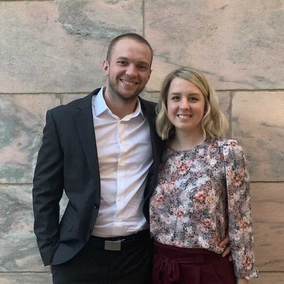
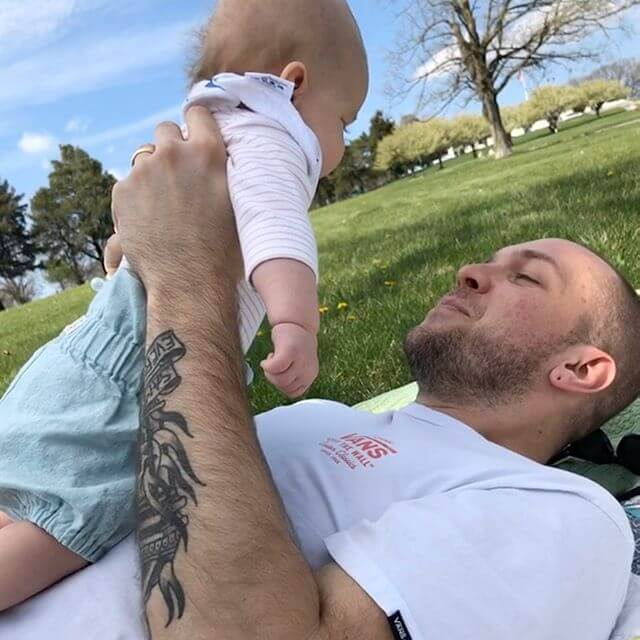

Joshua Masen
I like to build stuff - usually on the web. Currently Front-end Engineer on the Product team at Flywheel. I'm also a musician, and a father.
Builder of the web
I've been building stuff on the web for over 10 years. While studying to obtain my Bachelor's Degree in graphic design, I taught myself to code and started building websites for freelance clients. By the time I earned my degree in 2010, there were far more entry-level development jobs than design jobs, so I started my professional career in development.
Here's what I've been up to since then, in resume-style reverse chronological order:
-
Flywheel
-
Front-End Engineer (Product) June 2019 - Present
On the Product team at Flywheel I work on our hosting application built with Ruby on Rails. I'm responsible for the HTML, CSS, and JS, and I work closely with our designers and backend engineers to create delightful experiences for our customers.
-
Front-End Engineer (Marketing) May 2016 - June 2019
As a Front-End Engineer on the Marketing team I was responsible for developing various Flywheel marketing sites, typically on WordPress. I worked closely with designers and content creators to rebuild our blog. I also acted as a technical resource for the team and integrated marketing and analytics software to help track and meet business goals.
-
Interface WordPress Course Instructor April 2016 - June 2016
As part of a partnership with Flywheel and Interface Web School, I instructed a class of students on the basics of web development, and introduced them to custom theme development in WordPress. Students developed real-world final projects for local non-profit businesses.
-
Happiness Engineer January 2014 - May 2016
As the first full-time hire and first Happiness Engineer at Flywheel, my job was to understand our product deeply, sell it to new users, and support it for existing customers. I answered support requests via email and phone, and solved problems for customers related to WordPress and the Flywheel hosting product.
-
-
Webster
-
Web/Interactive Designer
October 2012 - December 2014Research, plan, design and develop web and interactive solutions for a variety of clients. From initial consultation, to content strategy, low and high fidelity prototypes, content management system integrations, quality control, and production launch, I help clients create or redefine their presence online.
-
-
Oriental Trading Co.
-
Web Designer
November 2010 - September 2012Developed and implemented front-end solutions that supported the user experience strategy. This included information architecture (wireframing, low fidelity prototypes), user interface design (high fidelity prototypes), and interaction design (HTML/CSS/JS).
-
Musician
I've been playing guitar and writing, recording, and performing my own songs since I was a teenager. I released my debut solo album It's a Wonder in December of 2018 on streaming platforms and on vinyl.
I still have a few copies of the album on vinyl. If you're interested in one, email me.
Family
 I grew up with a very large family in Iowa, and my wife Casey and I now have one daughter of our own. When we get free time, we like live music, hiking, biking, and kayaking.